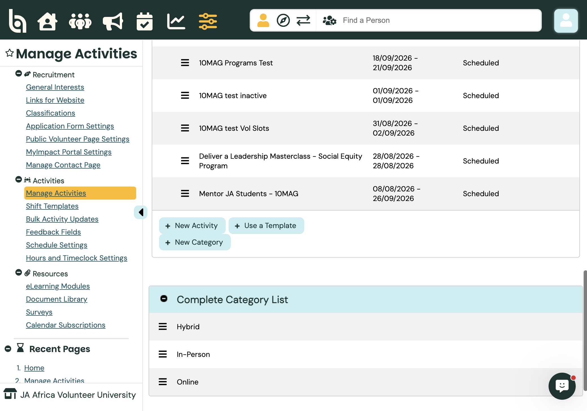
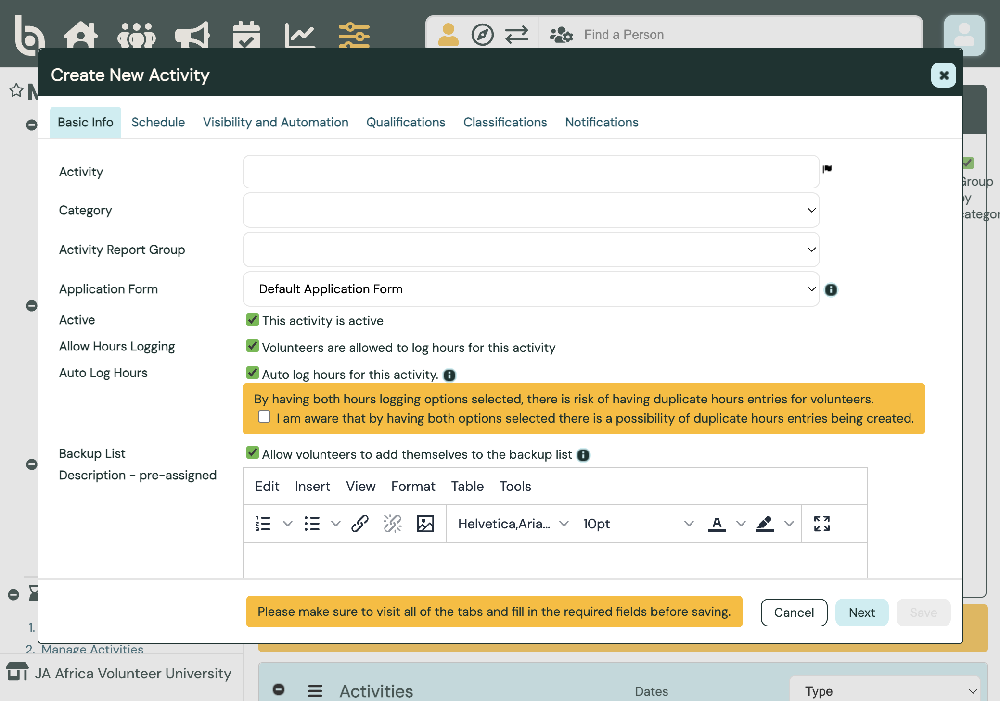
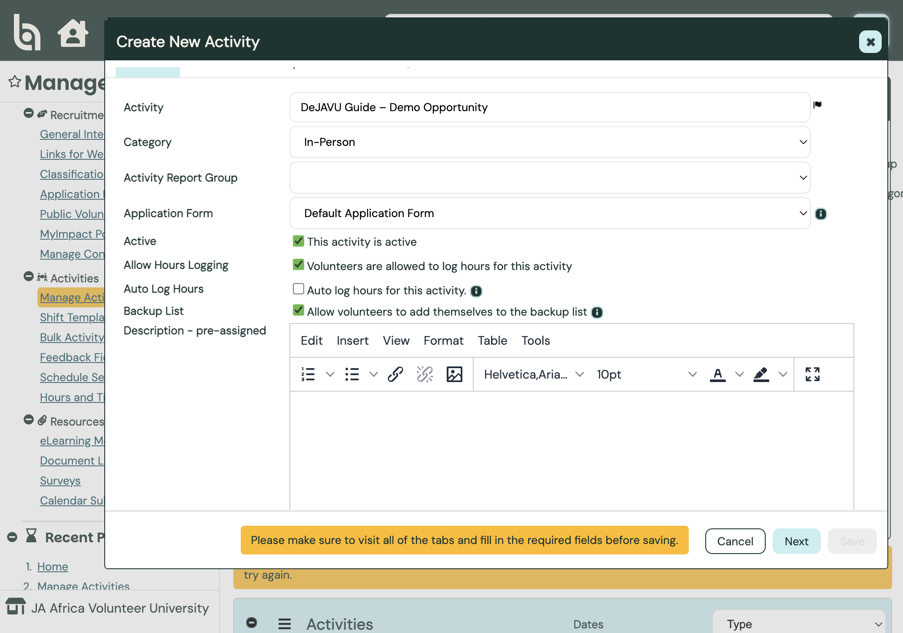
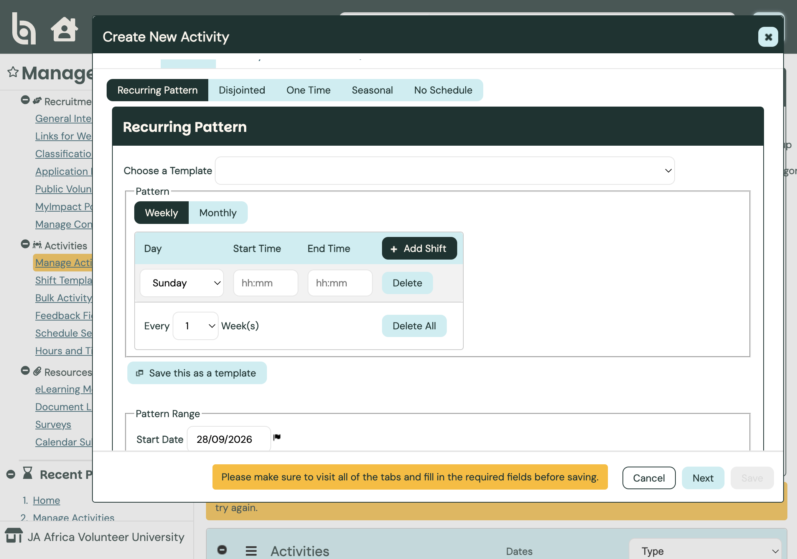
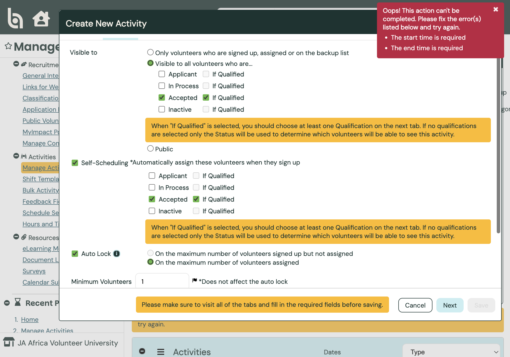
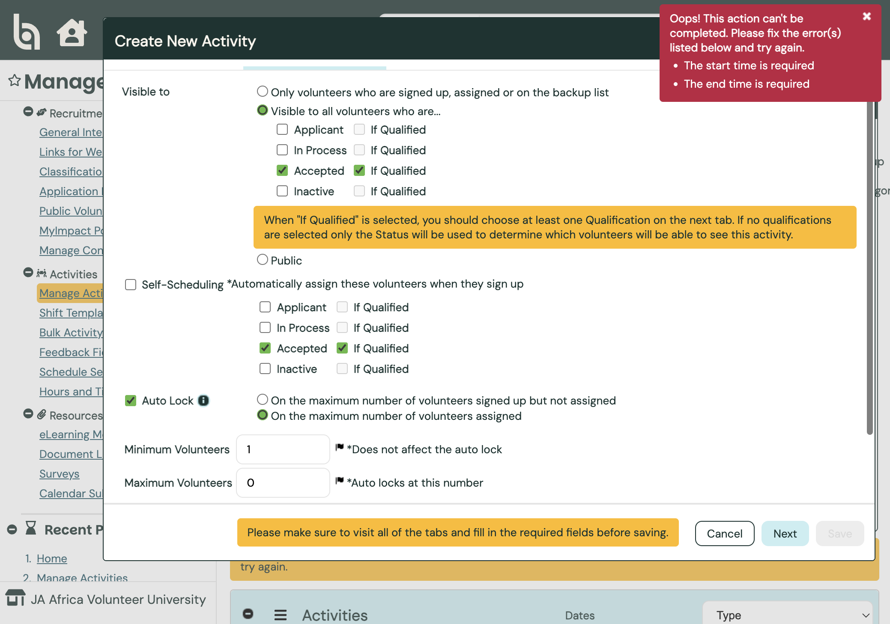
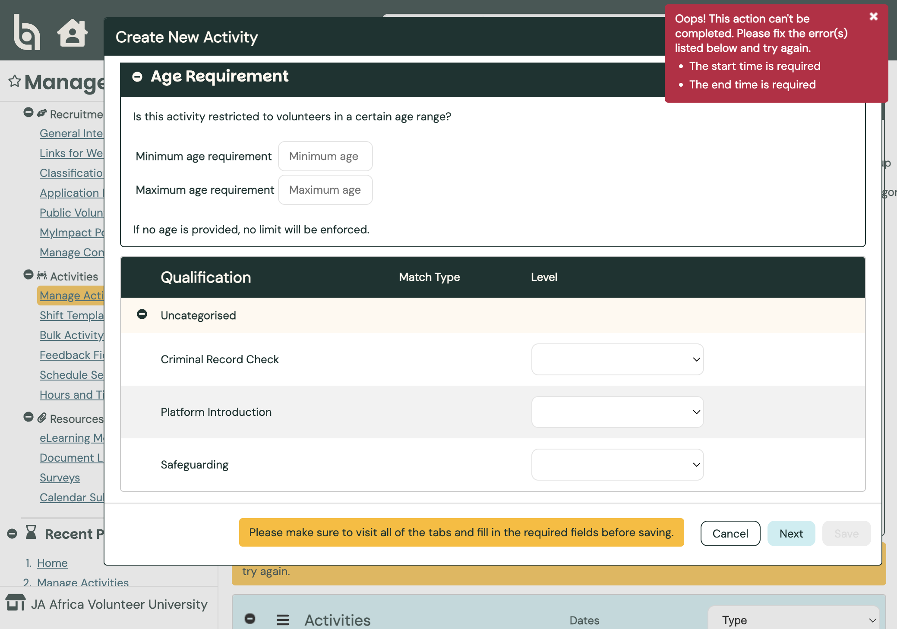

Admin guide
Audience · AdministratorCreating Opportunities
In Better Impact, opportunities are Activities. Create them in the JA Africa Volunteer University organisation so volunteers can browse, sign up, and log hours. You choose—per activity—whether sign-ups are accepted automatically or need admin review, and whether hours are auto-logged or entered by the volunteer. After you save, register the opportunity in the DeJAVU hours tracker spreadsheet so feedback surveys can go out when volunteers hit the target hours. See Surveys — Volunteer Feedback for creating the survey and copying its link.
Path: Configuration → Activities → Manage Activities → + New Activity · Docs: BI comprehensive guide to activities · Tracker (JA Africa staff): DeJAVU Opportunity Metadata
Open Manage Activities (org account)
Switch into JA Africa Volunteer University (not the enterprise). Go to Configuration → Activities → Manage Activities.
From here you can filter existing opportunities, or create one with + New Activity, + Use a Template, or + New Category.

New ActivityJA Africa default path: create activities in the Volunteer University (or country) org. Enterprise Activity Templates can standardise defaults when you use Use a Template.
Basic Info — name, category, hours defaults
Click + New Activity. On the Basic Info tab enter the Activity name, Category (Hybrid / In-Person / Online), optional Activity Report Group, and Application Form.
Leave This activity is active checked so it can appear for signup.
JA Africa default for hours: both Allow Hours Logging and Auto Log Hours start checked. Auto Log Hours applies to scheduled activities and writes hours from the shift times. When both are on, Better Impact warns about possible duplicate entries — acknowledge the warning only if you intentionally want both paths.

Hours defaults onOther option — manual hours: uncheck Auto Log Hours and keep Allow Hours Logging on. Volunteers (or admins) enter hours themselves — useful when you also collect feedback fields (feedback does not appear on auto-logged hours).

Auto Log offYou can also disallow hours entirely (uncheck Allow Hours Logging) for informational or non-hour roles. Backup list can stay on so volunteers join a waitlist when full.
Schedule — choose how shifts work
On the Schedule tab pick one schedule type:
Recurring Pattern — repeating weekly/monthly shifts (common for programmes).
Disjointed — several irregular shifts under one activity.
One Time — a single date and time.
Seasonal — date range without fixed shift times.
No Schedule — unscheduled; volunteers log hours without shifts.

Schedule typesYou can load a saved shift template, or save the pattern as a template for later. Start/end times are required before Save on scheduled types.
Visibility and acceptance (Self-Scheduling)
On Visibility and Automation, decide who sees the opportunity and whether signup is automatic or needs review.
Visible to (JA Africa typical): Accepted volunteers + If Qualified — then set Safeguarding (and any other quals) on the Qualifications tab so only qualified Accepted volunteers see it. Alternatives: only signed-up / assigned / backup, or Public.
Self-Scheduling is the acceptance switch:
On (JA Africa default — automated acceptance): matching volunteers are assigned when they sign up. No pending queue for that path.

Self-Scheduling onOff (manual admin review): uncheck Self-Scheduling. Sign-ups land in pending for an admin to approve — use this for higher-risk opportunities where you want a human check before assignment. You can turn Self-Scheduling back on later for the same activity without recreating it.

Manual reviewAlso configure Auto Lock (closes signup at max volunteers), min/max volunteers, optional self-removal, and signup cut-off hours before the shift. Self-Scheduling applies to the whole activity, not individual shifts.
Qualifications (e.g. Safeguarding)
On the Qualifications tab, set required levels when you used If Qualified. For DeJAVU, set Safeguarding → Passed so only volunteers who completed safeguarding see and (if Self-Scheduling is on) auto-assign to the opportunity.

Safeguarding PassedOptional: age min/max, Platform Introduction, Criminal Record Check. Then use Classifications and Notifications tabs as needed, visit all tabs, and Save.
Register target hours in the survey tracker
After the opportunity is saved in Better Impact, open the DeJAVU Opportunity Metadata spreadsheet (JA Africa staff only) and add a row on the Activities sheet. A daily job compares each volunteer’s logged hours to the target; when they hit the minimum, it sends the feedback survey.
Spreadsheet (staff only): DeJAVU Opportunity Metadata on SharePoint
Fill these columns for the new opportunity:
Activity Name — must match the Better Impact activity name exactly (same spelling, spacing, and punctuation).
Target Hours — the minimum hours a volunteer must log before the survey can be sent.
Survey Threshold % — optional. Leave blank to use the sheet
default, or set a percentage of target hours (for example 100).
Survey URL — optional. Paste the Regular URL from Surveys → Generate Link, or leave blank to send the default feedback survey.
Start date and End date — required. Use the opportunity’s start and end dates so the job only counts hours in that window.
The creator of the opportunity is responsible for adding this row. If the Activity Name does not match Better Impact exactly, the job will not find the hours and the survey will not send.
Switch acceptance or hours later
After the activity exists, open it from Manage Activities → Options → Edit. On Basic Info you can toggle Allow Hours Logging / Auto Log Hours. On Visibility and Automation you can turn Self-Scheduling on or off at any time — for example keep low-risk roles automatic and flip a higher-risk opportunity to manual review for a campaign period, then switch back.
Pending sign-ups (when Self-Scheduling is off) appear for admin approval on the Assign / schedule dashboards until you accept or decline them.
If you rename an activity in Better Impact, update Activity Name (and dates if they change) in the tracker sheet so the survey job stays aligned.